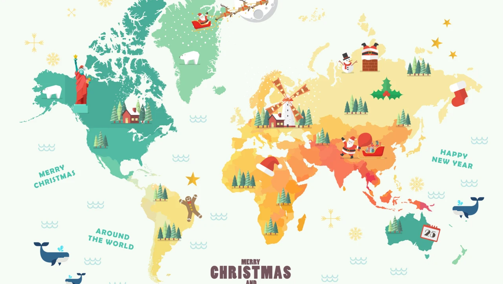

Explora las tradiciones navideñas alrededor del mundo

España: El 6 de enero, los Reyes Magos traen regalos, y las familias disfrutan del Roscón de Reyes.
Estados Unidos: Santa Claus llena los calcetines, y las familias decoran árboles y cantan villancicos.
Canadá: En Quebec se celebra la 'Fête des Rois' con pasteles y festivales de luces.
México: Las Posadas incluyen procesiones, piñatas, tamales y atole.
Brasil: La Misa del Gallo y una cena con pavo y arroz con pasas son tradición.
Argentina: Las familias celebran con asados y fuegos artificiales a la medianoche.
Rusia: Ded Moroz trae regalos durante las cenas de Nochevieja con su nieta Snegurochka.
China: Árboles de Navidad decorados en rojo y dorado simbolizan suerte y felicidad.
Groenlandia: Es común intercambiar regalos hechos a mano y celebrar con platos tradicionales como carne de reno o foca.
África (general): Las celebraciones incluyen villancicos y comidas comunitarias al aire libre.
 Página Principal
Página Principal